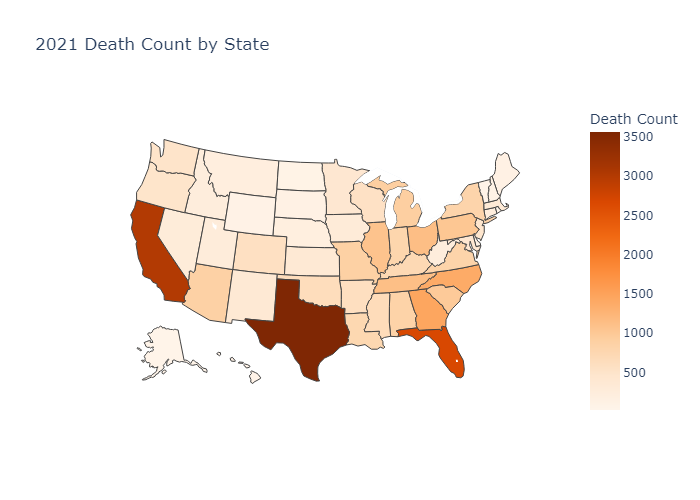
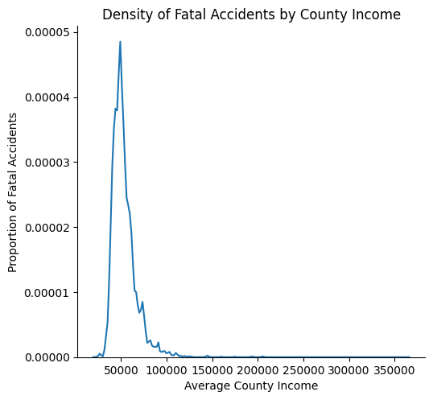

Data Exploration
Data Collection
Explain .py that collect api info here
Data Cleaning and Analysis
The vast majority of the data used for our project comes from the Fatality Analysis Reporting System (FARS) as produce by the National Highway Traffic Safety Association (NHTSA). The data was collected through the public API associated with FARS, publicly available on the FARS website Furthermore, county level income was collected from the Bureau of Economic Analysis. Initial download of vehicle crash dataset from the FARS tool proved to be too large to publish to github unedited as it was roughly 120 MB. As such, 53 empty and duplicate columns were removed to allow for pushing to Github pages for the purposes of this assignment. No other cleaning was done to demonstrate what the raw data looks like. The vehicle dataset contains information regarding the vehicles included within an accident in 2021 and the persons in each vehicle. It is presented below and still maintains 94 columns (some of which are still empty or duplicates)
| Unnamed: 0 | ARR_HOUR | ARR_HOURNAME | ARR_MIN | ARR_MINNAME | CF1 | CF1NAME | CF2 | CF2NAME | CF3 | ... | VE_TOTAL | WEATHER | WEATHER1 | WEATHER1NAME | WEATHER2 | WEATHER2NAME | WEATHERNAME | WRK_ZONE | WRK_ZONENAME | YEAR | |
|---|---|---|---|---|---|---|---|---|---|---|---|---|---|---|---|---|---|---|---|---|---|
| 0 | 0 | 22 | 10:00pm-10:59pm | 25 | 25 | NaN | NaN | NaN | NaN | NaN | ... | 2 | 2 | NaN | NaN | NaN | NaN | Rain | 0 | NaN | 2021 |
| 1 | 1 | 19 | 7:00pm-7:59pm | 9 | 9 | NaN | NaN | NaN | NaN | NaN | ... | 1 | 2 | NaN | NaN | NaN | NaN | Rain | 0 | NaN | 2021 |
| 2 | 2 | 9 | 9:00am-9:59am | 40 | 40 | NaN | NaN | NaN | NaN | NaN | ... | 1 | 2 | NaN | NaN | NaN | NaN | Rain | 0 | NaN | 2021 |
| 3 | 3 | 16 | 4:00pm-4:59pm | 28 | 28 | NaN | NaN | NaN | NaN | NaN | ... | 1 | 1 | NaN | NaN | NaN | NaN | Clear | 0 | NaN | 2021 |
| 4 | 4 | 22 | 10:00pm-10:59pm | 30 | 30 | NaN | NaN | NaN | NaN | NaN | ... | 2 | 10 | NaN | NaN | NaN | NaN | Cloudy | 0 | NaN | 2021 |
5 rows × 94 columns
The raw data from the Bureau of Economic Analysis includes average income by county and is as follows:
| Table 1. Per Capita Personal Income, by County, 2020–2022 | Unnamed: 1 | Unnamed: 2 | Unnamed: 3 | Unnamed: 4 | Unnamed: 5 | Unnamed: 6 | Unnamed: 7 | |
|---|---|---|---|---|---|---|---|---|
| 0 | NaN | Per capita personal income1 | NaN | NaN | NaN | Percent change from preceding period | NaN | NaN |
| 1 | NaN | Dollars | NaN | NaN | Rank in state | Percent change | NaN | Rank in state |
| 2 | NaN | 2020 | 2021 | 2022 | 2022 | 2021 | 2022.0 | 2022 |
| 3 | United States | 59,153 | 64,430 | 65,470 | -- | 8.9 | 1.6 | -- |
| 4 | NaN | NaN | NaN | NaN | NaN | NaN | NaN | NaN |
Lastly, the accident dataset from FARS contains information on fatal accidents in 2021, and includes categorical and technical information about the overall accident as opposed to vehicle information in an accident as the Vehicle dataset does. Unfiltered, it looks as follows:
| Unnamed: 0 | ARR_HOUR | ARR_HOURNAME | ARR_MIN | ARR_MINNAME | CF1 | CF1NAME | CF2 | CF2NAME | CF3 | ... | VE_TOTAL | WEATHER | WEATHER1 | WEATHER1NAME | WEATHER2 | WEATHER2NAME | WEATHERNAME | WRK_ZONE | WRK_ZONENAME | YEAR | |
|---|---|---|---|---|---|---|---|---|---|---|---|---|---|---|---|---|---|---|---|---|---|
| 0 | 0 | 22 | 10:00pm-10:59pm | 25 | 25 | NaN | NaN | NaN | NaN | NaN | ... | 2 | 2 | NaN | NaN | NaN | NaN | Rain | 0 | NaN | 2021 |
| 1 | 1 | 19 | 7:00pm-7:59pm | 9 | 9 | NaN | NaN | NaN | NaN | NaN | ... | 1 | 2 | NaN | NaN | NaN | NaN | Rain | 0 | NaN | 2021 |
| 2 | 2 | 9 | 9:00am-9:59am | 40 | 40 | NaN | NaN | NaN | NaN | NaN | ... | 1 | 2 | NaN | NaN | NaN | NaN | Rain | 0 | NaN | 2021 |
| 3 | 3 | 16 | 4:00pm-4:59pm | 28 | 28 | NaN | NaN | NaN | NaN | NaN | ... | 1 | 1 | NaN | NaN | NaN | NaN | Clear | 0 | NaN | 2021 |
| 4 | 4 | 22 | 10:00pm-10:59pm | 30 | 30 | NaN | NaN | NaN | NaN | NaN | ... | 2 | 10 | NaN | NaN | NaN | NaN | Cloudy | 0 | NaN | 2021 |
5 rows × 94 columns
Vehicle Dataset
The Vehicle dataset was first cut down susbstantially by eliminating the columns tha contained either no data or duplicate data as previously mentioned. Over 90 columns were cut from the dataset this way which drastically reduced the size of dataframe. Much of the duplicate data came from the fact that two separate columns would represent the same data using diferent values, one would often use a code or value to represent some categorical data while another column would be said category. I.e. a numerical column would exist to act as a categorical column. Dependent on the specific column, either the categorical or numerical data was selected for the final dataset but never both to save space and potential confusion. For example, 2 separate columns existed prior to cleaning for the speed limit of a given road where one was an integer while the other was a string. In this case we elected to keep the integer. In other cases, long strings of numbers would be split into single characters like in the case of license plate information. For the data that was left, we decided that on a general basis, NaN values would be kept in the main datasets to be removed at the discretion of the researcher as needed for a specific task (for example for a specific graph or pursuing a specific question). This was chosen over removing rows that held NaN values as Nan often held positional information. For example, in the "V_CONFIGNAME" column that describes how a truck, trailer, or towed vehicle was oriented (configured), an NaN value would describe such vehicles that had no capacity to tow, weren't of such a stature, or weren't towing. Thus the NaN provides some information to the overall dataset as the other rows still include traffic accident data for other vehicle types. The cleaned data then looks as follows:
| DAY | DEATHS | DEFORMEDNAME | DR_DRINKNAME | DR_HGT | DR_PRES | DR_PRESNAME | DR_WGT | DR_ZIP | FIRST_MO | ... | VPICBODYCLASSNAME | VPICMAKENAME | VPICMODELNAME | VPROFILENAME | VSPD_LIM | VSURCONDNAME | VTCONT_FNAME | VTRAFCONNAME | VTRAFWAYNAME | V_CONFIGNAME | |
|---|---|---|---|---|---|---|---|---|---|---|---|---|---|---|---|---|---|---|---|---|---|
| 0 | 12 | 1 | Disabling Damage | No | 70.0 | 1 | Yes | NaN | 33060 | 2 | ... | Sport Utility Vehicle (SUV)/Multi-Purpose Vehi... | Jeep | Patriot | Level | 70 | Wet | No Controls | No Controls | Two-Way, Divided, Positive Median Barrier | Not Applicable |
| 1 | 12 | 1 | Disabling Damage | No | NaN | 1 | Yes | NaN | 30316 | 0 | ... | Sport Utility Vehicle (SUV)/Multi-Purpose Vehi... | Volvo | XC60 | Level | 70 | Wet | No Controls | No Controls | Two-Way, Divided, Positive Median Barrier | Not Applicable |
| 2 | 11 | 2 | Disabling Damage | No | 65.0 | 1 | Yes | 190.0 | 36116 | 1 | ... | Sedan/Saloon | Lexus | ES | Level | 70 | Wet | No Controls | No Controls | Two-Way, Divided, Positive Median Barrier | Not Applicable |
| 3 | 7 | 0 | Functional Damage | No | 65.0 | 1 | Yes | 147.0 | 35405 | 11 | ... | Sedan/Saloon | Toyota | Camry | Downhill | 70 | Wet | No Controls | No Controls | Two-Way, Divided, Unprotected Median | Not Applicable |
| 4 | 3 | 1 | Disabling Damage | No | 72.0 | 1 | Yes | NaN | 33127 | 12 | ... | Sport Utility Vehicle (SUV)/Multi-Purpose Vehi... | Infiniti | QX60 | Level | 70 | Dry | No Controls | No Controls | Two-Way, Divided, Unprotected Median | Not Applicable |
5 rows × 80 columns
From here we can look at some general information within the dataset to get a better undersanding of the overall dataset.
For example, included below is a summation of all fatal traffic incidents placed within a map of the US.
As the color of the state gets darker, a greater density of overall fatal accidents occur within a given state.
This will provide necessary information on what states to pursue in future portions of this project.
From the graph below it is evident that California, Texas, and FLorida, likely due to the population in these states being larger than others.

Furthermore, using a generalized, nationwide dataset will allow for large sweeping analysis of major brands and their presence in fatal incidents.
Looking to the bar graph below, we can the ten manufacturers that appear most frequently on the site of fatal incidents.
This information may provide insight or suggest further research to the either (a) the company culture (b) the culture surrounding the companies vehicles (c) or the safety features provided by the larger companies.
 We can look into this a little further by seeing how vehicles are damaged during such accidents.
Below is a pie chart demonstrating the proportions of vehicles that are either undamaged, display minor damage, have some functional damage, or are totaled.
It is clear from the graph below tha most vehicles end up being completely totalled from these accidents.
We can look into this a little further by seeing how vehicles are damaged during such accidents.
Below is a pie chart demonstrating the proportions of vehicles that are either undamaged, display minor damage, have some functional damage, or are totaled.
It is clear from the graph below tha most vehicles end up being completely totalled from these accidents.

Accident Dataset
The accident dataset was similarly cut down to remove any duplicate columns, and in most cases, NaN values were kept under the same pretenses as the vehicle dataset. Following this, the income dataset from the Bureau of Economic Analysis was saved and pulled. The columns of the BEA dataset were renamed to match that of the accident dataset, and all counties present in the dataset were formatted to be all lowercase for commonality. The county column in the accident dataset was similarly formatted in all lowercase. The 2021 income information from the BEA dataset was then joined to the end of the accident dataset such that each accident now included the average income of the county that the accident took place in. A brief analysis of the dataset at this point showed the need to clean further on a basis of income by using a kernel density plot. Comparing the density of accidents across incomes helped to demonstrate the need to eliminate a large portion of outliers. Said graph is included below. Notice the length o fthe right tail, suggesting there are outliers. 
As such the outliers were calculated using the Inner Quartile Range (IQR) for the available salary data. The first quartile was calculated as $44,665, the third quartile was $58750, and the inner quartile range was $14,085. As a quick check to demonstrate the possibility of outliers came from checking the median and mean while calculating the iqr outliers. With a mean of $53,383 and a median of $58,750, there is likely to be positive skew. Using these numbers, any value above the threshold of $79,887.50 (1.5*IQR above the third quartile) was considered to be an outlier and was thus excluded from the dataset. Conceptually this makes sense to exclude both the outliers and extreme earners too. From an outlier standpoint, including such data is likely to skew our data rightward where there are less fatal accidents present which could cushion a substantial amount of our analysis. From a practical standpoint, it is highly likely that as people make more money and are able to afford better vehicles that have greater safety features which may skew some of our future analysis. After excluding these values, the cleaned dataset looks as follows:
| ARR_HOUR | ARR_HOURNAME | ARR_MIN | ARR_MINNAME | CITYNAME | COUNTYNAME | CaseYear | DAY | DAY_WEEK | DAY_WEEKNAME | ... | TWAY_ID | TWAY_ID2 | TYP_INTNAME | VE_FORMS | VE_TOTAL | WEATHER | WEATHERNAME | WRK_ZONENAME | YEAR | COUNTYINCOME | |
|---|---|---|---|---|---|---|---|---|---|---|---|---|---|---|---|---|---|---|---|---|---|
| 0 | 22 | 10:00pm-10:59pm | 25 | 25 | NOT APPLICABLE | st. clair | 2021 | 12 | 6 | Friday | ... | I-20 | NaN | Not an Intersection | 2 | 2 | 2 | Rain | NaN | 2021 | 47088.0 |
| 1 | 22 | 10:00pm-10:59pm | 25 | 25 | NOT APPLICABLE | st. clair | 2021 | 12 | 6 | Friday | ... | I-20 | NaN | Not an Intersection | 2 | 2 | 2 | Rain | NaN | 2021 | 54909.0 |
| 2 | 22 | 10:00pm-10:59pm | 25 | 25 | NOT APPLICABLE | st. clair | 2021 | 12 | 6 | Friday | ... | I-20 | NaN | Not an Intersection | 2 | 2 | 2 | Rain | NaN | 2021 | 52388.0 |
| 3 | 22 | 10:00pm-10:59pm | 25 | 25 | NOT APPLICABLE | st. clair | 2021 | 12 | 6 | Friday | ... | I-20 | NaN | Not an Intersection | 2 | 2 | 2 | Rain | NaN | 2021 | 36989.0 |
| 4 | 19 | 7:00pm-7:59pm | 9 | 9 | NOT APPLICABLE | jefferson | 2021 | 11 | 5 | Thursday | ... | I-459 | NaN | Not an Intersection | 1 | 1 | 2 | Rain | NaN | 2021 | 64006.0 |
5 rows × 58 columns
With these values now excluded, it is possible to continue with analysis.
Looking to the data that is still readily available, we can evaluate how cars interact in accidents.
Understanding this data will allow furhter investigation into the necessary safety features for vehicles based on location.
The plot below simulates a vehicle moving in the 12 clock direction with the size of the line coming off of it demonstrating the quantity of accidents on that point of the vehicle.
This may suggest a further look into the models and safety features available on the front of a vehicle and its' impact on fatal accidents.
Looking to the graph, it is evident that most accidents occur head on, or at the 12 Clock Position, followed by being rear-ended or t-boned in no particular order.